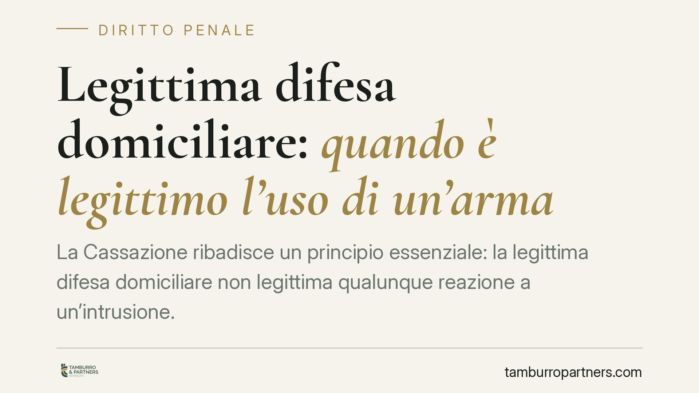

Legittima difesa domiciliare: quando è legittimo l'uso di un'arma
La Cassazione ribadisce un principio essenziale: la legittima difesa domiciliare non legittima qualunque reazione a un'intrusione. Serve un pericolo attuale di aggressione e l'inevitabilità dell'uso dell'arma. Le riforme del 2006 e del 2019 hanno rafforzato la posizione di chi si difende in casa, ma non hanno cancellato il presupposto del pericolo concreto. Capire questa differenza è decisivo.

Il principio: intrusione non significa aggressione
La linea di confine della legittima difesa domiciliare è netta ma spesso fraintesa. Chi si introduce illecitamente in un'abitazione commette un fatto grave, ma la sola intrusione non autorizza di per sé l'uso di un'arma da fuoco.
Per essere scriminata, cioè penalmente non punibile, la reazione difensiva deve rispondere a un pericolo attuale di offesa alla persona e deve rappresentare l'unica difesa possibile. In altri termini: l'arma è legittima quando non c'era alternativa ragionevole per neutralizzare l'aggressione in corso.
Inquadramento normativo
La disciplina si fonda sull'art. 52 del codice penale. Il comma 1 fissa la regola generale: non è punibile chi reagisce per difendere un diritto proprio o altrui contro il pericolo attuale di un'offesa ingiusta, purché la difesa sia proporzionata all'offesa.
La Legge 13 febbraio 2006, n. 59 ha introdotto i commi 2 e 3, dedicati alla difesa in luoghi di privata dimora. È stata questa riforma — e non quella successiva — a inserire l'avverbio «sempre» nella formula sulla proporzionalità, presumendo proporzionato l'uso di un'arma legittimamente detenuta per difendere la propria o altrui incolumità, oppure i beni quando non vi sia desistenza e vi sia pericolo di aggressione.
La Legge 26 aprile 2019, n. 36 è intervenuta in un secondo momento. Ha rafforzato il testo dell'art. 52 (introducendo l'avverbio «sempre» anche al comma relativo al rapporto di proporzione) e, soprattutto, ha aggiunto un comma all'art. 55 c.p.: una causa di non punibilità per chi, trovandosi in condizione di minorata difesa o in stato di grave turbamento derivante dalla situazione di pericolo, ecceda colposamente i limiti della difesa legittima. La stessa legge ha inasprito le pene per la violazione di domicilio ex art. 614 c.p.
Cosa non è cambiato
Secondo l'orientamento consolidato della Cassazione penale, le presunzioni introdotte dal legislatore operano a valle del presupposto del pericolo, non lo sostituiscono. La presunzione di proporzionalità non può funzionare se manca un'aggressione attuale alla persona: se il pericolo non esiste, non c'è nulla da presumere proporzionato.
Questo significa che il giudice continua a verificare, caso per caso, se al momento della reazione vi fosse un'offesa in atto o imminente e se l'uso dell'arma fosse realmente inevitabile. La riforma del 2019 ha ampliato la tutela sul versante dell'eccesso colposo (art. 55 c.p.), ma non ha trasformato ogni reazione in casa in condotta automaticamente lecita.
Implicazioni pratiche
Alcuni scenari aiutano a distinguere.
Scriminante esclusa. Il ladro è in fuga, sta scavalcando la recinzione o si sta allontanando con la refurtiva: qui manca il pericolo attuale per la persona. Sparare alle spalle di chi fugge, di regola, non rientra nella difesa legittima e può integrare un reato.
Scriminante ammessa. L'intruso avanza con un'arma o con un oggetto atto a offendere, in uno spazio ristretto, senza vie di uscita per chi si difende: qui il pericolo attuale e l'inevitabilità della reazione possono ricorrere.
Zona grigia dell'eccesso colposo. Reazione sproporzionata ma determinata da grave turbamento per la situazione di pericolo: qui può operare la causa di non punibilità dell'art. 55 c.p., introdotta nel 2019. La valutazione resta rimessa all'accertamento giudiziale.
La differenza tra queste ipotesi non è teorica: incide sulla qualificazione del fatto, sull'eventuale rinvio a giudizio e sull'esito del processo.
Cosa fare in concreto
- Verifica la detenzione legale dell'arma. La presunzione di proporzionalità presuppone un'arma legittimamente detenuta. Il titolo abilitativo va mantenuto in regola.
- Conserva ogni elemento della dinamica. Modalità dell'intrusione, tracce, orario e stato dei luoghi possono risultare decisivi per ricostruire l'attualità del pericolo.
- Non alterare la scena. Preservare i luoghi nelle condizioni in cui si sono svolti i fatti aiuta l'accertamento della verità processuale.
- Rendi le dichiarazioni con la dovuta assistenza tecnica. Chi si trova coinvolto in un episodio del genere ha diritto a essere assistito da un difensore prima di ricostruire i fatti alle autorità.
- Distingui difesa dei beni e difesa della persona. La tutela più ampia riguarda l'incolumità personale; la sola difesa del patrimonio segue regole più restrittive.
Contributo informativo a cura di Tamburro & Partners Avvocati – Avv. Giuseppe Tamburro. Non costituisce parere legale.
Ogni condominio ha una storia a sé.
Se gestisci un'amministrazione e vuoi un confronto su una specifica questione condominiale, scrivi allo studio. Ti rispondiamo entro un giorno lavorativo.